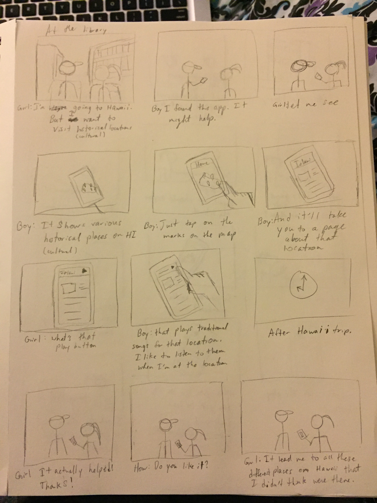
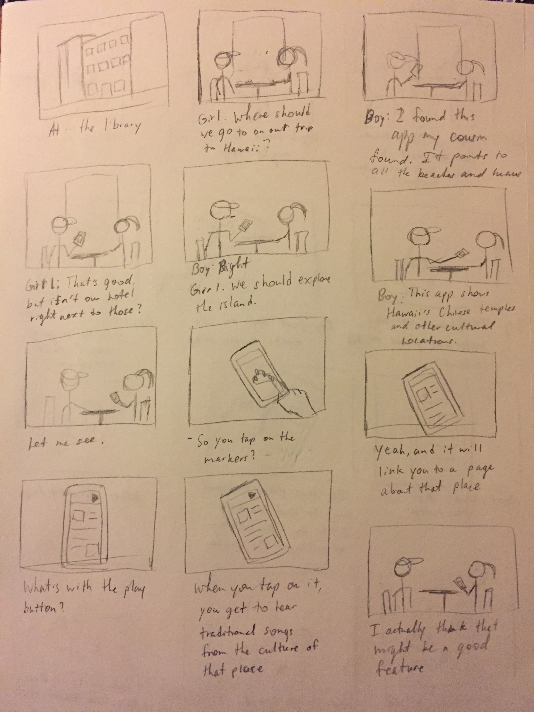

From the critiques I have received in class, I have to research on how to use the markers on the mapbox map as links to pages. The first critique added in that this app may help people on how to get to the cultural locations on Hawaii. From that, I have to think of a way to have a play button in the page to make exploring Hawaii more immersive. I also shared the possibility of simply having the app about Hawaiian History. However, my partner at the time said it would be more interesting to visit locations of the cultures that have come to Hawaii.
The second critique was mostly about how to portray the requirements such as the setting and sequence. From then on, I mostly gave him feedback on his project and told him to have a welcome page that warns users about the risk of the interface triggering anxiety. I took pictures of the storyboards and made them into links. One storyboard portrays the user(s) planning the trip while the other storyboard portrays experiencing the app.
 